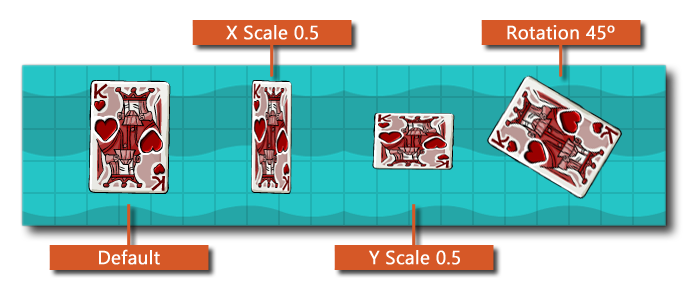

Diese Funktion zeichnet das angegebene Sprite ähnlich wie die Aktion Draw Sprite aber mit zusätzlichen Optionen zum Ändern der Skalierung, Überblendung, Rotation und des Rahmens des Sprites, das gezeichnet wird. Ändern dieser Werte nicht die Ressource in irgendeiner Weise ändern (nur, wie es gezeichnet wird), und Sie können eine der verfügbaren verwenden Sprite - Eigenschaft Variablen anstelle direkter Werte für alle Argumente in der Funktion. Das folgende Bild zeigt, wie sich verschiedene Werte auf die Zeichnung des Sprites auswirken: 
HINWEIS: Die Farbüberblendung wird nur für das HTML5-Ziel empfohlen, wenn WebGL aktiviert ist. Sie können jedoch die Überblendungsfarbe festlegen, wenn sie nicht aktiviert ist, und das Sprite wird wie üblich eingeblendet. Jedes Mischen auf diese Weise erzeugt jedoch ein doppeltes Sprite, das dann im Cache gespeichert und bei Bedarf verwendet wird. Dies ist alles andere als optimal und wenn Sie mehrere Farbänderungen verwenden, verlangsamt dies die Spieleleistung, es sei denn, Sie aktivieren WebGL. Wenn Sie WebGL nicht verwenden möchten, können Sie die Schriftart-Cachegröße so einstellen, dass sie begrenzt wird, falls dies mit der Funktion erforderlich sein sollte sprite_set_cache_size.HINWEIS: Diese Aktion dient nur zur Verwendung in den verschiedenen Draw-Ereignissen und zeichnet nichts, wenn sie an anderer Stelle verwendet wird.
Streit Beschreibung Sprite Das Sprite zum Zeichnen Frame Der Sprite-Frame zum Zeichnen (verwenden Sie die eingebaute Variable image_index für den aktuellen Rahmen) X Die x-Position zum Zeichnen im Raum Y Die y-Position im Raum zu zeichnen Scale X Der Skalierungsfaktor für die X-Achse (verwenden Sie die eingebaute Variable image_xscale für die aktuelle X-Skala) Scale Y Der Skalierungsfaktor für die Y-Achse (verwenden Sie die eingebaute Variable image_yscale für die aktuelle Y-Skala) Rotation Der Zeichenwinkel für das Sprite (von 0 bis 360, im Gegenuhrzeigersinn, wobei 0 rechts ist) - verwenden Sie die eingebaute Variable image_angle für die aktuelle Rotation) Colour Die Farbe, die mit dem Sprite gemischt werden soll (Standard ist weiß, und Sie können die eingebaute Variable verwenden) image_blend für die aktuelle Farbe)
Der obige Aktionsblockcode prüft eine Variable und wenn sie auf gesetzt ist true dann wird das Sprite mit zufälliger Skalierung entlang der X- und Y-Achse gezeichnet und mit der Farbe Rot gemischt, andernfalls wird das Sprite unter Verwendung der Standardtransformationen gezeichnet.